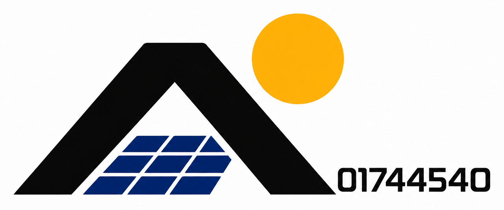

⌁
La situación actual
El consumo eléctrico, las características del inmueble y los precios de los equipos suelen estar dispersos. Sin un método común, comparar alternativas y justificar una cotización se vuelve complicado.
Una propuesta para analizar la demanda de un aula, dimensionar un sistema fotovoltaico y convertir los resultados técnicos en una cotización clara para el cliente.
TE1020 · Análisis de Circuitos Eléctricos · Situación problema académica

Photon Labs necesita una herramienta propia que transforme la información de consumo de un cliente en una propuesta técnica y económica comprensible, verificable y lista para presentarse.
El consumo eléctrico, las características del inmueble y los precios de los equipos suelen estar dispersos. Sin un método común, comparar alternativas y justificar una cotización se vuelve complicado.
Un flujo de análisis que reúne cargas, recurso solar, componentes comerciales y evaluación económica para generar un dimensionamiento preliminar y un reporte profesional. El caso inicial será un salón de clases.
El proceso conecta el análisis de circuitos eléctricos con las decisiones de diseño del sistema fotovoltaico.
Identificar equipos, cantidad, potencia y horas de uso para estimar la energía diaria.
Usar la energía requerida y las horas solares pico para estimar paneles y su configuración.
Revisar tensiones, corrientes, potencia, autonomía y compatibilidad entre equipos.
Integrar precios verificables, inversión, ahorro estimado y recuperación en un reporte.
Cada módulo resuelve una parte del problema y aporta información al resultado final.
Inventario de cargas, cantidad, potencia y tiempo de operación. Estimación de demanda y energía consumida en kWh.
Estimación de cantidad y potencia del arreglo, considerando horas solares pico y pérdidas asumidas.
Selección de un modelo comercial y revisión de potencia, rango de tensión, corriente y compatibilidad.
Estimación de capacidad de baterías, configuración y autonomía, con supuestos y límites explícitos.
Registro de marca, modelo, especificaciones, precio, proveedor, enlace y fecha de consulta.
Integración de inversión, ahorro estimado y periodo de recuperación con tarifa eléctrica en MXN/kWh.
La propuesta parte de magnitudes eléctricas medibles. La potencia describe la rapidez con la que un equipo consume energía; la energía depende también del tiempo de uso.
Las expresiones siguientes muestran el modelo conceptual. Los resultados numéricos requieren el inventario real del aula, las horas solares pico, las fichas técnicas y los supuestos de diseño.
Edía = Σ(Pi × ti × ni) / 1000Potencia en watts, tiempo en horas y cantidad de equipos; resultado en kWh/día.
PFV ≈ Edía / (HSP × η)HSP son las horas solares pico y η representa el rendimiento global supuesto del sistema.
Serie → aumenta tensión · Paralelo → aumenta corrienteLa configuración final debe respetar los límites de entrada del inversor y las especificaciones de los módulos.
Retorno ≈ inversión inicial / ahorro anualEs una estimación; depende de tarifa, energía realmente aprovechada, costos y condiciones de operación.
Antes de presentar una alternativa, los resultados deben contrastarse con información técnica y pruebas manuales.
El resultado esperado es un reporte PDF con jerarquía visual, cifras claras y anexos técnicos. Debe explicar qué se propone instalar, cuánto costaría y qué beneficios podrían esperarse, sin prometer ahorros garantizados.
ANÁLISIS ENERGÉTICO · CASO AULA ESCOLAR
La meta es convertir el análisis de circuitos eléctricos en una herramienta clara para evaluar soluciones fotovoltaicas, justificar decisiones y comunicar su valor.
Volver al inicio ↑